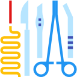

Unidad de Video Endoscopia Diagnóstica y Terapéutica
Somos los pioneros con más de 12 años de experiencia ofreciendo el servicio de endoscopia diagnóstica y terapéutica para caninos, felinos y animales silvestres.

Unidad de Cirugía de Mínima Invasión Laparoscópica
Ofrecemos el servicio de Cirugía de Mínima Invasión Laparoscópica, a través de un staff de médicos altamente calificados,infraestuctura y equipamientos de última generación.
Medicina Reproductiva y Banco de Semen
Contamos con los últimos protocolos diagnósticos y terapéticos para el manejo de las enfermedades que afectan el sistema reproductor de nuestras mascotas. Y desde hace dos años , venimos ofreciendo el servicio de congelamiento de semen, bajo los protocolos de CLONE USA.
¿Qué ofrecemos?
- Acunpuntura
- Cirugía General
- Medicina Regenerativa
- Anastésia
- Nefrología
- Urología
- Neurología
- Oftalmología
- Ortopedia
Clínica Veterinaria San Diego Copyright © 2017 - 2019
Av.General Córdova 885, Santa Cruz - Miraflores T 421 8941 - 997 556 446
Av.General Córdova 885, Santa Cruz - Miraflores T 421 8941 - 997 556 446